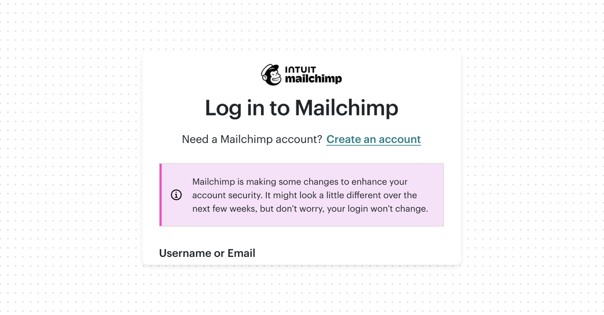
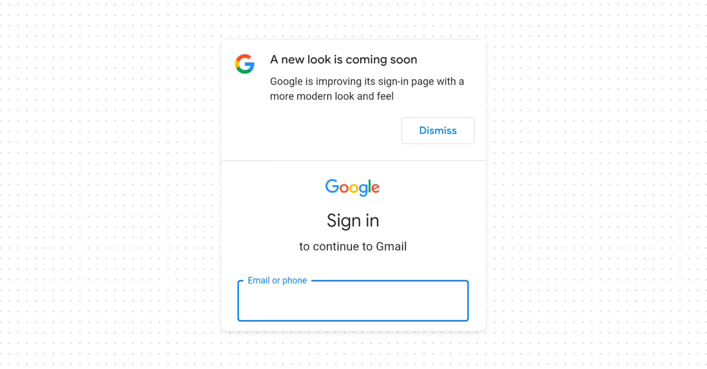
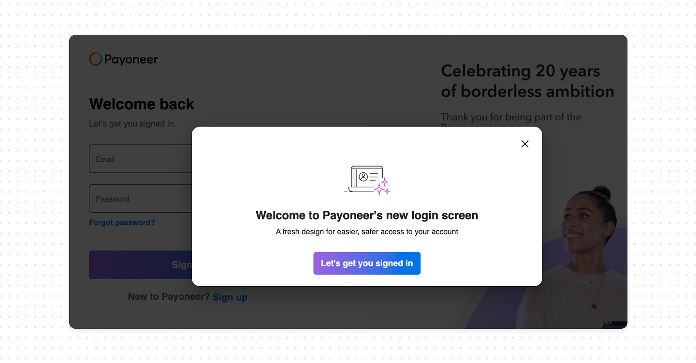

You should warn users before redesigning your login page

Login screens become familiar over time. People repeatedly see the same layout, spacing, and colors for years. Eventually, users subconsciously memorize them as part of “what feels safe”.
What happens when the login page suddenly changes
Here's what happens in practice. A user opens a product they've used for years. Mental models takes over, they go straight to the email field, then the password field, without really looking at the screen.
Then one day the screen is different. New layout, new colors, fields in a different place.
For a moment, the user stops. And the questions that follow are exactly the ones security awareness training tells them to ask:
- Is this really the right site?
- Was the company hacked?
- Is someone trying to steal my password?
Some users will close the tab. Some will retype the URL to "check". Some will hesitate before entering credentials they've typed a thousand times. A few will assume the worst and submit a support ticket asking whether the company has been breached.
None of this is irrational. It's the behavior we want from security-aware users. The problem is that a legitimate redesign triggers the same alarm as a real attack, and the product gave them nothing to tell the difference.
What good UX looks like
- Announce before launch. Tell users a change is coming through the channels they already trust: an in-product banner, an email from a known address, a note in the changelog. Something as simple as "We're updating the look of our sign-in page next week. Your login and password won't change" removes most of the surprise.
- Reassure at the moment of the change. Right after launch, the new login page itself should acknowledge it. A short line "We've refreshed our sign-in page, use the same email and password as before" tells the returning user this is expected, not an attack.



Bottom line
A login redesign is one of the few changes that can make a trustworthy product look compromised. Users have been trained to distrust unfamiliar authentication screens, and a silent redesign sets off exactly that instinct. Tell people before it happens, reassure them when it does, so redesign stops feeling like a threat and starts feeling like an upgrade.
The irony is that security teaches users to pay attention to suspicious and unusual authentication behavior, yet products themselves often redesign login and authentication screens without warning or explanation, leaving users confused and frustrated.